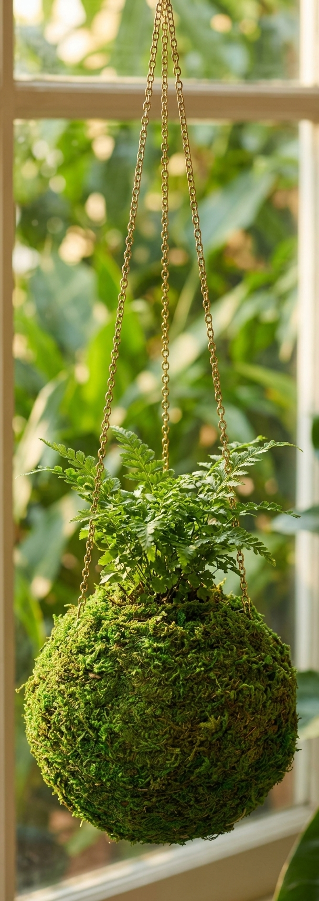

A ready-to-use moss ball planter, inspired by the Japanese art of kokedama - just add a plant and hang it in the light.

The moss ball itself is the planter - just hang it and water.
Comes pre-formed, so you can add a plant and hang it the same day.
Brings soft, natural texture to any sunny window or corner.
Kokedama literally means 'moss ball' in Japanese - a plant's roots are wrapped in moss instead of a pot.
It's a simple, low-fuss way to bring a living plant into small spaces, kitchens, or hanging displays.
Let a trailing plant catch the light.
A soft green accent near the sink or counter.
An easy, low-maintenance plant gift.
No, the moss ball ships empty - add your own small plant or bulb.
Soak the moss ball briefly, then let it drain before re-hanging.
Both - just keep it out of harsh direct sun for long periods.
A ready-to-use kokedama moss ball planter - see current pricing and availability on Amazon.
Check Price on Amazon →